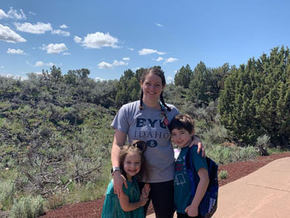

Target Audience
Who:
Everybody who lives in Preston, Soda Springs and Fish Haven, Idaho and the surrounding towns. The people who care about the weather. People who don't live in the area, but like to visit for camping and other outdoor activities.
Age:
About 12 to 75. Anyone who can read and use a computer or a mobile device.
Income:
Most families who use mobile devices and computers to check the weather are middle and upper class.
Motivation:
Our target audience will be motivated to use this weather site because they will want to know how to plan their day, and what to wear as they leave the house to go to work, school, fishing, hunting, playing sports, etc.
Persona 1
This is Brad. He and his wife Bettianne are in their 30's and have four children under the age of six! They live in South Jordan, Utah where Brad is a mechanical engineer and makes $109,000 plus benefits. The whole family loves to get out of the house on the weekends and go camping and rock climbing. Bettianne's parents live in Fish Haven, Idaho, so they often pack up the family during the hottest weeks of the summer and head north for Bear Lake to go camping and visit Grandma and Grandpa. They usually stay in their deluxe tent trailer, but Brad doesn't like the trailer to get rained on. You can bet Brad is going to be checking the weather often all through camping season!
Persona 2
This is Penny, a 30-year-old single mom who is motivated to succeed. After getting her master's degree in Social Work, she landed a fantastic job in Preston, Idaho making $80,000, plus a full benefit package. She packed up her son Landon and her daughter Julie and said goodbye to Anchorage, Alaska. Now that she is in Southeastern Idaho, she and her kids want to get all the sunshine that they possibly can! Penny also likes to take early morning runs. Most likely she won't be wearing a jacket in the summertime because she is used to cold Alaskan summers. However, once She climatizes, she's going to be watching the weather and dressing appropriately.
